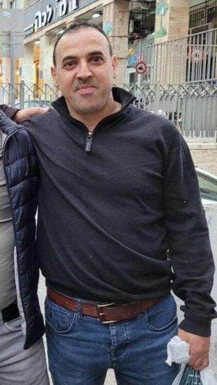

אלי שרעבי
אלי שרעבי, בן 52 מקיבוץ בארי, עבר לקיבוץ בגיל 17 מתל אביב כחלק מתנועת עליית הנוער.
כמה שנים לאחר מכן הצטרף אליו אחיו יוסי.
המעבר לווה בתפיסה ציונית ערכית שחונכו אליה בבית.
אשתו, ליאן שרעבי ז"ל, הגיעה מאנגליה להתנדב בקיבוץ, הם התאהבו, נישאו והולידו שתי בנות - נויה ויהל.
אלי הוא איש משפחה אוהב , שהיה בעל שאיפות עיסקיות להתפתח.
אדם אסטרטג שיודע להסתכל קדימה, לבנות תוכניות ולדבוק במטרה.
אלי ויוסי נחטפו שניהם בשבעה באוקטובר, בנפרד בלי ידיעה על חטיפתו של האחר.
יוסי אחיו, נהרג בהיותו חטוף.
כמו כן, אישתו ובנותיו של אלי נרצחו גם הן ב-7.10.